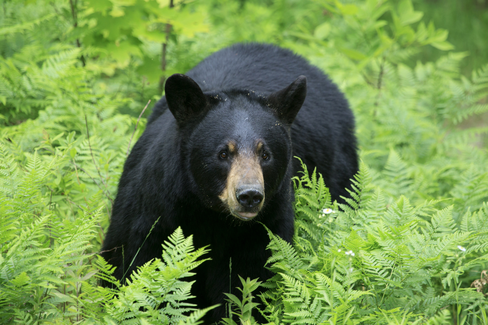

American Black Bear
The American Black Bear (Ursus americanus) is a medium-sized bear native to North America. This species of bear is known for its distinctive black fur, though it can also range in color from light brown to dark brown. American Black Bears are omnivorous, consuming a diet of berries, nuts, insects, and occasionally small mammals. They are primarily solitary animals, with mothers and cubs forming the only familial groups. Despite their name, American Black Bears can also be found in varying colors such as cinnamon, blonde, and blue-gray.